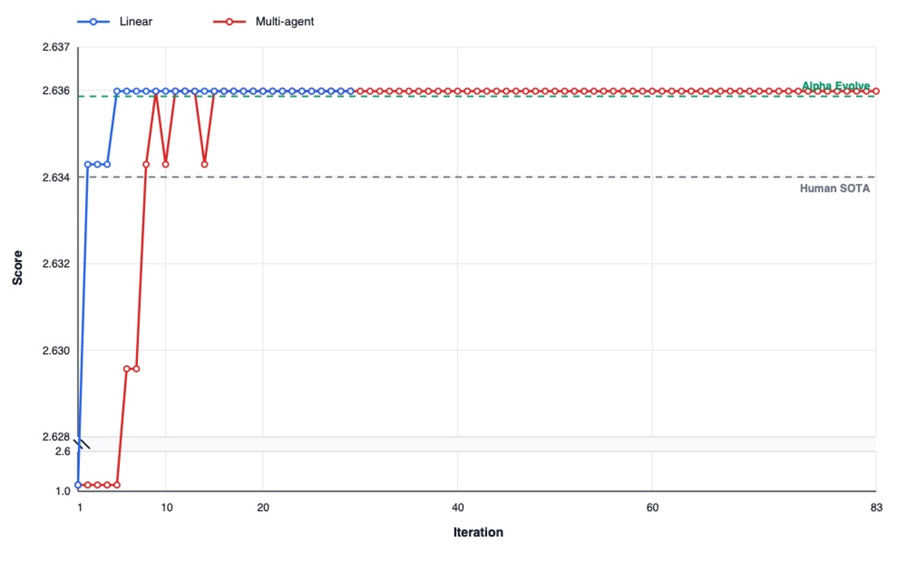
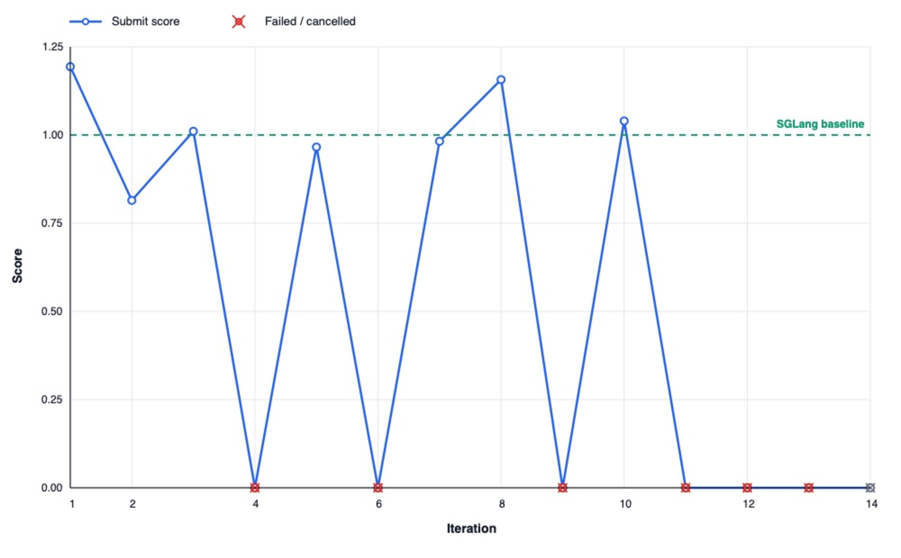
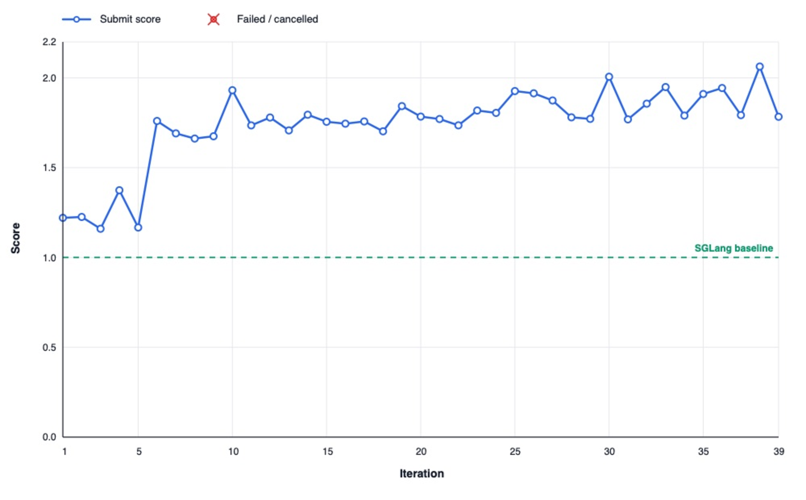

A Framework for Agentic Optimization
Large language models are becoming increasingly capable at writing code, debugging programs, and reasoning over complex software systems. But in many automated discovery pipelines, these models still operate inside rigid search loops designed by humans. The controller selects what to try next, decides which prior candidates to reuse, constructs the prompt, and manages the evaluation process. The model contributes code, but the search strategy largely remains outside the agent.
Our work explores a different question: what happens if the coding agent itself is allowed to conduct the search?
We introduce Agentic Optimization, a server-first framework for autonomous coding-agent search. The central idea is to move inner-loop optimization behavior into the agent while keeping benchmark authority under server control. In other words, the agent can inspect prior attempts, run local experiments, create tools, compare results, publish findings, and decide when to submit a candidate. But the server still owns the task definition, hidden evaluator, official scoring, artifact snapshots, budget control, and leaderboard updates.
Agent-Owned Search, Server-Owned Authority
This separation is important. If the controller dictates every search step, it can suppress the very behaviors that modern coding agents are beginning to show: opportunistic debugging, selective retrieval, local experiment design, reuse of prior discoveries, and adaptation across sessions. At the same time, a scientific benchmark cannot simply hand over its hidden tests or scoring logic to the agent. Agentic Optimization is designed around this boundary: agent-owned search, server-owned authority.
The framework exposes two task-agnostic evaluation surfaces. A public verify interface gives the agent fast, safe feedback about whether a candidate satisfies the task contract. A separate submit interface snapshots the candidate and runs authoritative evaluation under server control. The agent can use verification during search, but official claims always come from immutable submitted artifacts.
The system also stores optimization history as semantic resources rather than as an ever-growing chat transcript. Prior candidates, evaluations, incumbents, findings, traces, environments, and shared tools are all recorded by the control plane. This allows future agents to retrieve useful state without relying on brittle workspace conventions or overloaded conversation history.
Experiments
We evaluated the framework on three tasks: circle packing, end-to-end LLM serving optimization, and decode-attention kernel optimization.
Circle Packing
For the case of packing 26 circles into a unit square, agents used verifier feedback, official submissions, shared tools, and persistent findings to improve candidate layouts. Both the linear and multi-agent runs exceeded previously reported CP26 scores, reaching 2.63598356975 and 2.63598366253, respectively. The multi-agent run produced the best result by allowing different workers to explore and refine separate directions while sharing durable state through the framework.
| Method | Score |
|---|---|
| AlphaEvolve | 2.635862 |
| ShinkaEvolve | 2.635982 |
| TTT-Discover | 2.635983 |
| Agentic Optimization (linear) | 2.63598356975 |
| Agentic Optimization (multi-agent) | 2.63598366253 |

End-to-End LLM Serving
The second task tested a harder systems setting: end-to-end optimization of Qwen3-1.7B serving with SGLang on an RTX 4090. Here, agents generated plausible kernel and backend changes, and many candidates passed public verification. But these changes did not reliably translate into official serving gains. Hidden hard-gate workloads exposed mismatches in text output, token IDs, logprobs, or top-logprobs. Local microbenchmarks were also poor predictors of full-server performance once batching, sampling, and prefill/decode tradeoffs were included.

This negative result is informative. It shows that agentic search is not enough by itself when the public feedback signal is weakly aligned with the hidden objective. In a large serving stack, a locally faster kernel can still make the full system slower or invalid. The framework made this failure mode visible rather than hiding it behind aggregate benchmark numbers.
Decode-Attention Kernel Optimization
To isolate the issue, we then narrowed the optimization surface to a decode-attention microkernel. This task removed most of the confounding factors from full serving and focused on a deterministic tensor operator with local correctness and timing feedback. Under this cleaner feedback loop, the agent achieved a 2.063× operator-level speedup over the official SGLang decode-attention implementation on the same RTX 4090 target.

Takeaways
Across these experiments, the main lesson is that coding agents can perform meaningful autonomous search when the candidate surface, verifier feedback, and official score are closely aligned. In compact mathematical or operator-level optimization tasks, they can iterate, diagnose failures, reuse tools, and steadily improve results. In large integrated systems, however, current agents still struggle when official outcomes depend on sparse, expensive, or brittle feedback.
Agentic Optimization is not a new mutation heuristic or a fixed evolutionary algorithm. It is a systems substrate for studying and amplifying autonomous search behavior in coding agents. By giving agents more responsibility for the search process while preserving server-side experimental authority, the framework offers a practical path toward more reliable automated discovery systems.
Future work should focus on better public surrogates for hidden evaluators, more robust correctness contracts for serving-level optimization, and task decompositions that preserve realistic objectives while giving agents feedback signals sharp enough for long-horizon search.